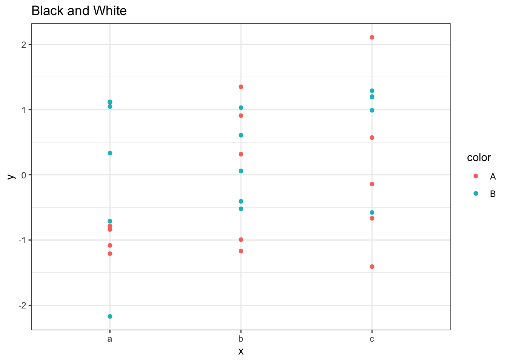
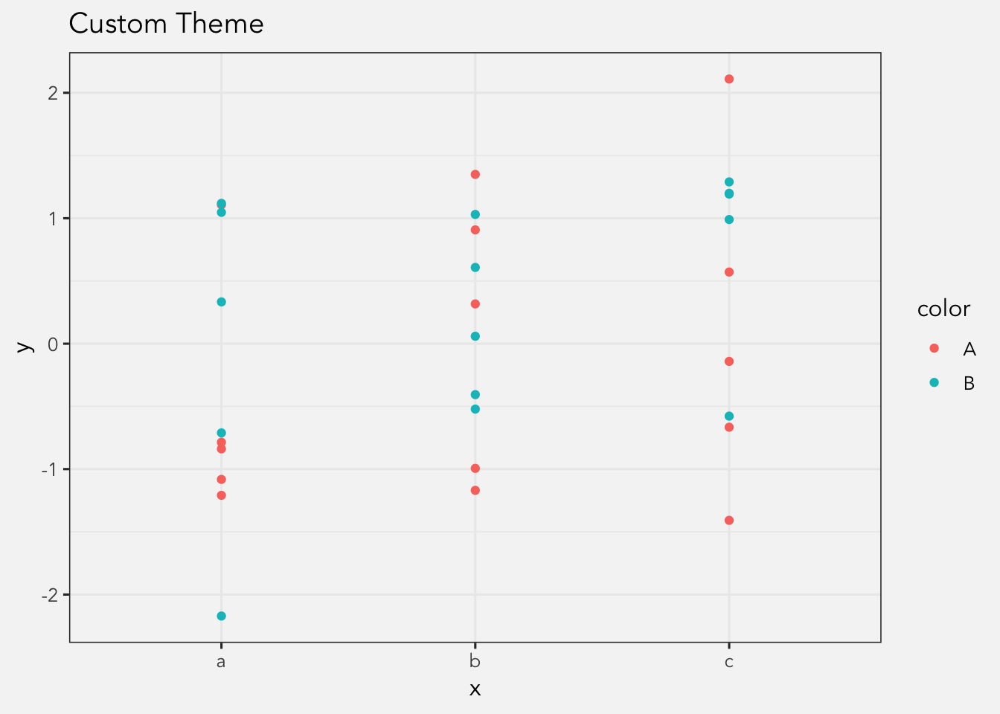

For additional detail and updated information on creating custom themes, see this handout which accompanies a workshop I gave in September 2019. For examples on everything the theme function can do, see this supplemental handout.
I’ve always enjoyed the R package ggplot2 because it allows limitless flexibility in how a plot looks—if you’re willing to put in the time. After a while though I found myself adding the same commands to all my plots so that they all match. Shouldn’t there be an easier way to do that?
Yes! I recently discovered how to make a custom theme in ggplot2. It was relatively straightforward to create, a cinch to implement, and everything looks great.
Why make a custom theme?
First, I don’t like it when I go to conferences and I see plots that have the default R settings, like the gray background, the white grid, and the standard font. To me, it’s like seeing a document in default the Helvetica or Calibri: they’re almost so bad you’d think they did it on purpose to force you to change it. And yet, they remain.
By not using the default R theme, you’re showing the world that you know your way around R. It shows that you didn’t just blindly copy and paste someone else’s code, but that you know how to control and customize things they way you want.
It shows that you have some attention to detail. The purpose of a plot is to present data in a clean and effective way. Yes, the type of plot and the colors and all that matters. But so does the color of the background and the font. By applying a new style to your plots, you can control everything to make sure your audience sees what you want them to see.
I like having my own unique theme because it’ll add some continuity between my presentations. I already have a custom PowerPoint template that I’ve been using for a while now, so all my presentations look like they go together. It also makes it easier to moves plots around from one presentation to another if they all match.
As of 2023, I still use that exact same template!
Finally, using a custom theme, especially in tandem with a custom powerpoint template, will make it look like everything goes together. My theme colors and font both match my slideshow colors and font (and this website’s!), so incorporating these visualizations into my slides is visually seamless.
How I figured this stuff out (and how you can learn more)
I discovered how to do this when I was looking at the code for theme_bw(). In case you haven’t used it, if you add this function to your ggplot() command, it’ll make a nice black and white theme for you, which I always found to be nice looking. (It’s actually just one of several themes: see the help page at ?theme_bw for other themes to try out.) Here’s the code straight from R for convenience:
What I see is a function that is based on theme_grey() with lots of modified elements to control different parts of a plot. When I was looking through the code, I figured out what was going on and through some trial and error, was able to make my own custom theme. So I’ll try to explain it for you and you might find it useful too.
The nuts and bolts
So the way this works is I create a function called theme_joey() and base on theme_bw(). The following block does that, but it changes the typeface to one I use called Avenir.
Right now, other than the typeface, theme_joey() is just a copy of theme_bw(). What I want to do now is change just a few of the properties in this function. To do that, I use the %+replace% command, which, in all honesty, I have no idea how it works. What I want to replace though are elements of the theme() function within theme_bw(), so I add that to the function:
Now, I just need to specify which elements of theme() I want to change. This took some trial and error, a peek at ggplot2’s help pages, as well as some googling.
Update: Three years after writing this original tutorial, I learned a lot more about theme() and gave a workshop on it. Here is the handout.
The first thing I wanted to to do was remove the background. I didn’t want a white one, so take it out entirely:
panel.background =element_blank(),
Then I wanted to change was the background to make it what I’ve seen described as “whitesmoke”. I’d prefer a transparent background in my plots so that the whatever I copy and paste the image into will always match, but I couldn’t figure out how to do that. Here’s how I specified the color:
The legend background and key were both white in theme_bw() still, so I wanted to make those transparent. So I’ll change those to transparent so they take on the global “gray96” specified above:
legend.background =element_rect(fill ="transparent", color =NA)legend.key =element_rect(fill ="transparent", color =NA)
So if we put all these elements in the new theme, we get a fully-functional, custom theme:
theme_joey <-function () { theme_bw(base_size=12, base_family="Avenir") %+replace%theme(panel.background =element_blank(),plot.background =element_rect(fill ="gray96", color =NA), legend.background =element_rect(fill ="transparent", color =NA),legend.key =element_rect(fill ="transparent", color =NA) )}
So all I need to do is make sure R knows about this function when I start a new session. What I do is I put it at the top of my R scripts in the same chunk of code where I load my packages and read in my data. I can then just add theme_joey() to any ggplot() command and like magic all my plots match. It’s pretty cool.
Sample plots
So here are some sample plots that show the differences between no theme, theme_bw(), and my new theme_joey():
# Sample datadf <-data.frame(x =factor(rep(letters[1:3], each =10)), y =rnorm(30), color=(rep(c("A", "B"), each=5)))plot <-ggplot(df, aes(x = x, y = y, color=color)) +geom_point()plot +ggtitle("No theme")
plot +ggtitle("Black and White") +theme_bw()

plot +ggtitle("Custom Theme") +theme_joey()

Assuming your browser is rendering this webpage like mine is, the last plot should be the same background color as this webpage, and the font should match my header fonts.
Update: I’ve changed the look of my webpage, so it probably doesn’t match anymore.
Note that some fonts require different settings if you want to export plots that use them as a pdf with ggsave(). You just need to add the argument device=cairo_pdf to it like so:
And that’s it! Give it an hour or so and I think you can start to make a custom theme. And let me know how it turns out. I’d love to see what you’ve done.